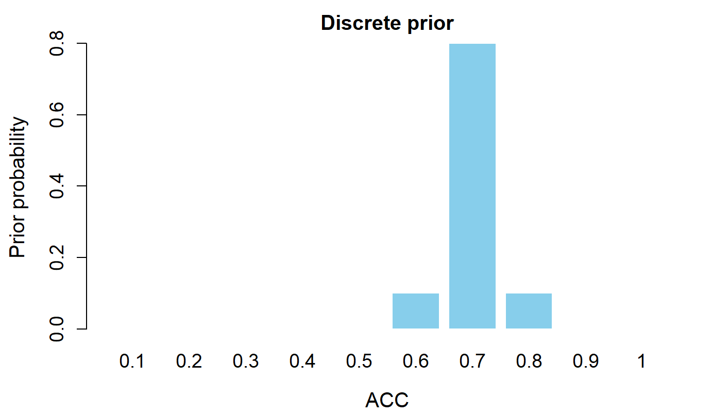
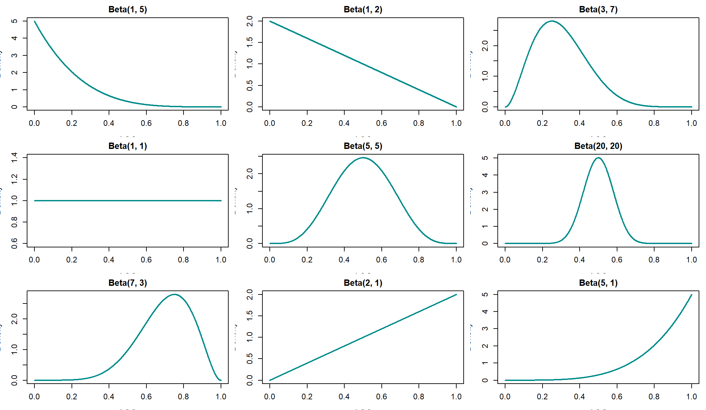
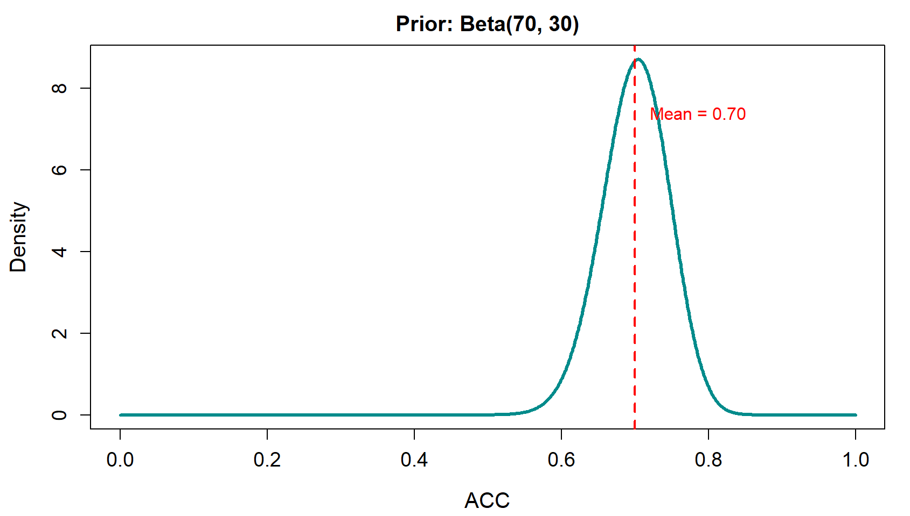
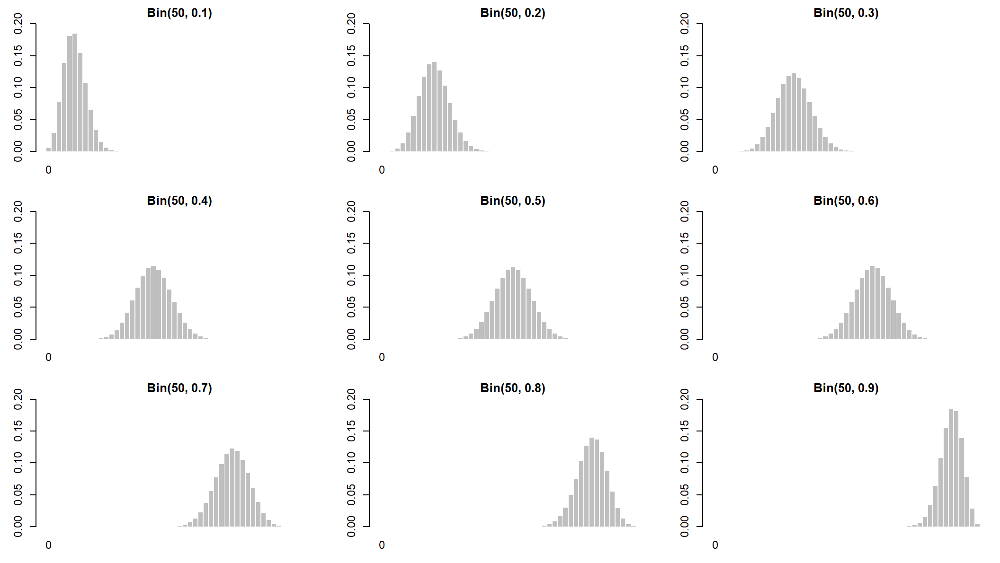
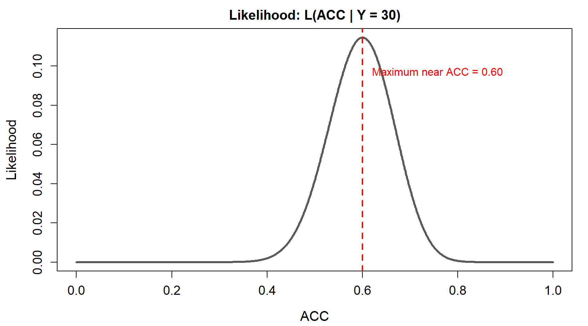
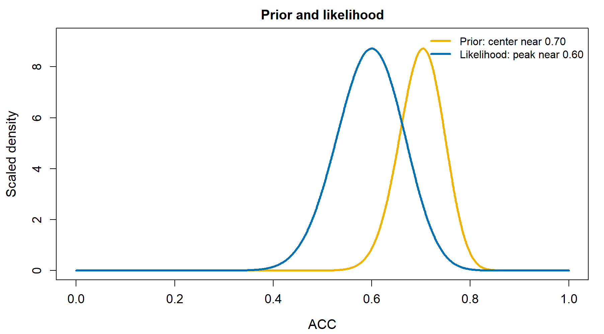
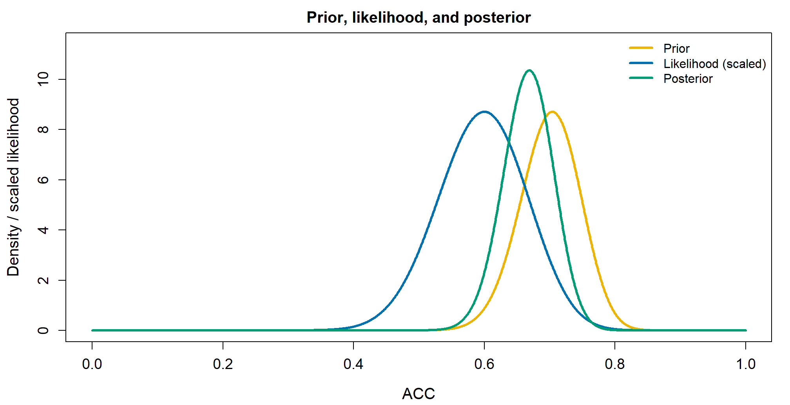
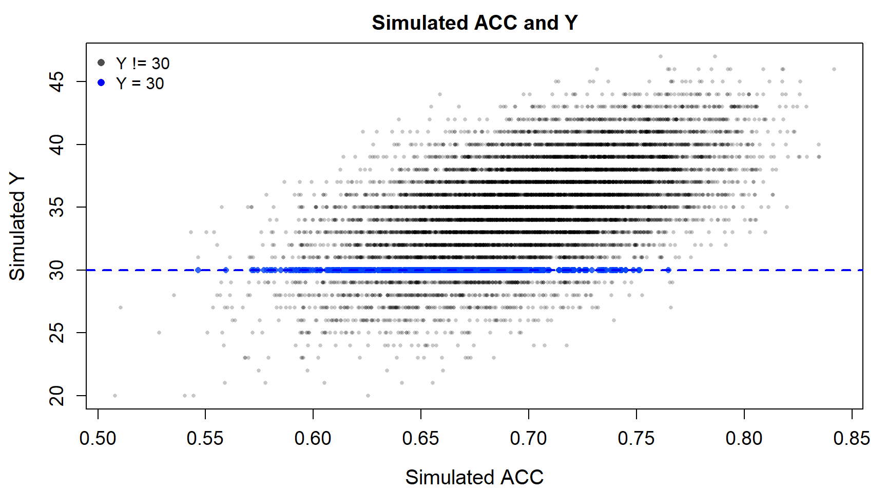
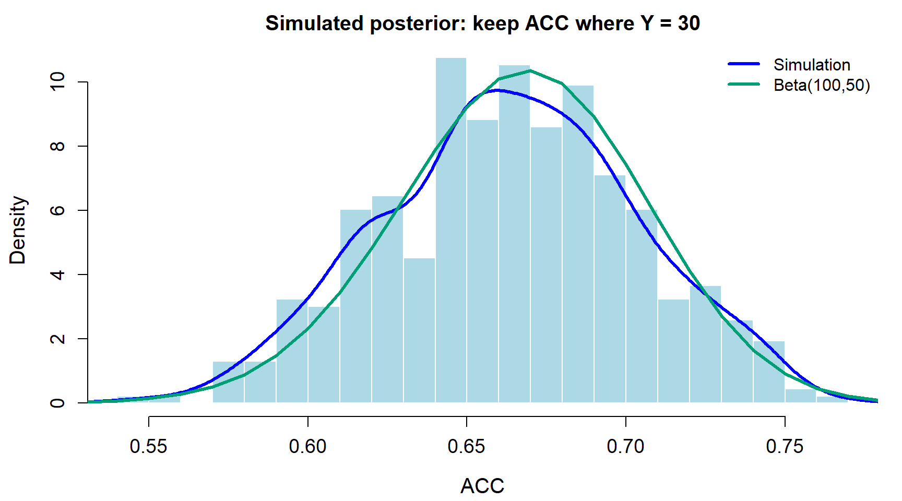

Code

The Beta-Binomial Bayesian Model
南京师范大学心理学院 · School of Psychology, Nanjing Normal University
我们想估计：
被试在随机点运动任务某一条件下，真正做对的能力是多少？
今天用一个最小完整模型回答这个问题：
\[ Y | ACC \sim \text{Bin}(n, ACC), \quad ACC \sim \text{Beta}(\alpha, \beta) \]
学完本讲，你应该能够：
[0,1] 上的先验信念ACC 与数据的兼容性随机点运动任务 (Random dot motion task) 用于研究感知决策。
被试需要判断随机点阵的整体运动方向；点的一致性越高，方向信息越清楚，任务通常越容易。


一次实验后，我们可以得到一个观察到的正确率。
但贝叶斯建模关心的是：
\[ \text{观察到的正确次数 } Y \quad \Rightarrow \quad \text{潜在正确能力 } ACC \]
ACC 不是直接观察到的值，而是我们要推断的参数。
假设 50 次试验中有 30 次正确。
\[ \hat{ACC} = \frac{30}{50} = 0.60 \]
这个数很有用，但它没有回答：
ACC 可能是 0.55 吗？在看到当前数据前，我们可能已经知道：
ACC 必须位于 [0,1]因此，我们需要一个定义在 [0,1] 上的先验模型。
先从上节课熟悉的离散信念开始。
但如果 ACC 可以是 [0,1] 中任意值，只允许 0.6、0.7、0.8 就过于粗糙。
\[ f(ACC), \quad 0 \le ACC \le 1 \]
并且曲线下面积为 1：
\[ \int_0^1 f(ACC)dACC = 1 \]
Beta 分布非常适合表示 [0,1] 上的概率参数。
\[ ACC \sim \text{Beta}(\alpha, \beta) \]
其中：
theme_set()
local({
x <- seq(0, 1, length.out = 1000)
params <- list(c(1, 5), c(1, 2), c(3, 7),
c(1, 1), c(5, 5), c(20, 20),
c(7, 3), c(2, 1), c(5, 1))
op <- par(mfrow = c(3, 3), mar = c(3.1, 3.2, 2.1, 0.8))
on.exit(par(op))
for (p in params) {
y <- dbeta(x, p[1], p[2])
plot(
x, y, type = "l", lwd = 2, col = "cyan4",
xlab = "ACC", ylab = "Density",
main = paste0("Beta(", p[1], ", ", p[2], ")")
)
}
})
根据教材中的设定，本课使用：
\[ ACC \sim \text{Beta}(70, 30) \]
其均值为：
\[ E(ACC) = \frac{70}{70 + 30} = 0.70 \]
这表达了：当前数据出现前，我们认为 ACC 大约在 0.70 附近。
直观上，\(\alpha\) 越大越偏向 1，\(\beta\) 越大越偏向 0，\(\alpha+\beta\) 越大分布越集中。

现在收集 50 次随机点运动任务数据。每次试验只有两个结果：正确 1 或错误 0。
记正确次数为 Y，总试次数为 n = 50。
如果每次试验正确概率都是 ACC，并且试验相互独立：
\[ Y | ACC \sim \text{Bin}(50, ACC) \]
概率质量函数为：
\[ P(Y = y | ACC) = \binom{50}{y}ACC^y(1-ACC)^{50-y} \]
theme_set()
local({
y <- 0:50
p_values <- seq(0.1, 0.9, by = 0.1)
op <- par(mfrow = c(3, 3), mar = c(3.0, 3.0, 2.0, 0.8))
on.exit(par(op))
for (p in p_values) {
prob <- dbinom(y, size = 50, prob = p)
barplot(
prob,
names.arg = ifelse(y %% 10 == 0, y, ""),
col = "grey75", border = NA,
ylim = c(0, 0.20),
xlab = "", ylab = "",
main = paste0("Bin(50, ", p, ")")
)
}
})
教材案例聚焦于：
\[ n = 50, \quad y = 30 \]
也就是 50 次试验中有 30 次正确。
问题变成：
哪些
ACC更容易生成Y = 30这样的数据？
对于任意一个候选 ACC，都可以计算：
\[ P(Y=30 | ACC) \]
当我们把 Y=30 固定，把 ACC 当作横轴变化时，就得到似然函数：
\[ L(ACC | Y=30) = \binom{50}{30}ACC^{30}(1-ACC)^{20} \]
theme_set()
acc <- seq(0, 1, length.out = 1000)
lik <- dbinom(30, size = 50, prob = acc)
plot(
acc, lik,
type = "l", lwd = 3, col = "grey35",
xlab = "ACC", ylab = "Likelihood",
main = "Likelihood: L(ACC | Y = 30)"
)
abline(v = 0.60, lty = 2, col = "red", lwd = 2)
text(0.62, max(lik) * 0.85, "Maximum near ACC = 0.60", col = "red", adj = 0)
似然回答的是：
如果
ACC是某个值，观察到Y=30有多可能？
它还没有回答：
看到
Y=30后，ACC的后验分布是什么？
要回答第二个问题，需要合并先验和似然。
本课的模型为：
\[ \begin{aligned} Y | ACC &\sim \text{Bin}(50, ACC) \\ ACC &\sim \text{Beta}(70, 30) \end{aligned} \]
贝叶斯更新的核心：
\[ f(ACC | Y=30) \propto f(ACC)L(ACC | Y=30) \]
似然只看数据；后验同时结合先验和数据。
theme_set()
acc <- seq(0, 1, length.out = 1000)
prior <- dbeta(acc, 70, 30)
lik <- dbinom(30, 50, acc)
lik_scaled <- lik / max(lik) * max(prior)
plot(
acc, prior,
type = "l", lwd = 3, col = "#f0b400",
xlab = "ACC", ylab = "Scaled density",
main = "Prior and likelihood",
ylim = c(0, max(prior) * 1.05)
)
lines(acc, lik_scaled, lwd = 3, col = "#0071b2")
legend(
"topright",
legend = c("Prior: center near 0.70", "Likelihood: peak near 0.60"),
col = c("#f0b400", "#0071b2"),
lwd = 3,
bty = "n"
)
后验应该位于二者之间，并且比先验更集中。
theme_set()
acc <- seq(0, 1, length.out = 2000)
prior <- dbeta(acc, 70, 30)
lik <- dbinom(30, 50, acc)
lik_scaled <- lik / max(lik) * max(prior)
posterior <- dbeta(acc, 100, 50)
plot(
acc, prior,
type = "l", lwd = 3, col = "#f0b400",
xlab = "ACC", ylab = "Density / scaled likelihood",
main = "Prior, likelihood, and posterior",
ylim = c(0, max(posterior) * 1.1)
)
lines(acc, lik_scaled, lwd = 3, col = "#0071b2")
lines(acc, posterior, lwd = 3, col = "#009e74")
legend(
"topright",
legend = c("Prior", "Likelihood (scaled)", "Posterior"),
col = c("#f0b400", "#0071b2", "#009e74"),
lwd = 3,
bty = "n"
)
Beta-Binomial 模型有一个简单的后验结果：
\[ ACC | (Y=y) \sim \text{Beta}(\alpha + y, \beta + n - y) \]
带入本课数值：
\[ ACC | (Y=30) \sim \text{Beta}(70+30, 30+20) \]
\[ ACC | (Y=30) \sim \text{Beta}(100, 50) \]
这也是 Beta 作为 Binomial 共轭先验带来的计算便利。
先验：
\[ ACC \sim \text{Beta}(70, 30) \]
数据：
\[ y = 30, \quad n-y = 20 \]
后验：
\[ \alpha_{\text{post}} = 70 + 30 = 100 \]
\[ \beta_{\text{post}} = 30 + 20 = 50 \]
| 指标 | Prior: Beta(70,30) | Posterior: Beta(100,50) |
|---|---|---|
| \(\alpha\) | 70 | 100 |
| \(\beta\) | 30 | 50 |
| mean | 0.700 | 0.667 |
| mode | 0.704 | 0.668 |
| sd | 0.0456 | 0.0384 |
数据把中心从 0.70 拉向 0.60，同时减少了不确定性。
公式告诉我们后验是 Beta(100,50)。模拟帮助我们理解：
后验可以看作“那些能生成观察数据的参数值”的分布。
ACCACC 模拟 50 次试验中的正确次数 YY = 30 的模拟样本ACC 分布theme_set()
matched <- sim$Y == 30
plot(
sim$ACC[!matched], sim$Y[!matched],
pch = 16, col = rgb(0, 0, 0, 0.22), cex = 0.55,
xlab = "Simulated ACC", ylab = "Simulated Y",
main = "Simulated ACC and Y"
)
points(
sim$ACC[matched], sim$Y[matched],
pch = 16, col = rgb(0, 0.25, 1, 0.8), cex = 0.8
)
abline(h = 30, col = "blue", lwd = 2, lty = 2)
legend(
"topleft",
legend = c("Y != 30", "Y = 30"),
col = c("grey30", "blue"),
pch = 16,
bty = "n"
)
theme_set()
posterior_sim <- sim$ACC[sim$Y == 30]
hist(
posterior_sim,
breaks = 18,
probability = TRUE,
col = "lightblue",
border = "white",
xlab = "ACC",
main = "Simulated posterior: keep ACC where Y = 30"
)
lines(density(posterior_sim), col = "blue", lwd = 3)
curve(dbeta(x, 100, 50), from = 0, to = 1, add = TRUE, col = "#009e74", lwd = 3)
legend(
"topright",
legend = c("Simulation", "Beta(100,50)"),
col = c("blue", "#009e74"),
lwd = 3,
bty = "n"
)
把同样的思路迁移到“心理学研究可重复性”：
Beta-Binomial 模型：
\[ \begin{aligned} Y | ACC &\sim \text{Bin}(n, ACC) \\ ACC &\sim \text{Beta}(\alpha, \beta) \end{aligned} \]
后验：
\[ ACC | (Y=y) \sim \text{Beta}(\alpha + y, \beta + n - y) \]
| 要素 | 本课对应 |
|---|---|
| 参数 | ACC: 被试真正做对的概率 |
| 先验 | ACC ~ Beta(70,30) |
| 数据模型 | Y | ACC ~ Bin(50, ACC) |
| 似然 | L(ACC | Y=30) |
| 后验 | ACC | Y=30 ~ Beta(100,50) |
贝叶斯建模不是只报告一个正确率。
它把研究问题改写为：
\[ \text{先验信念} + \text{数据证据} \Rightarrow \text{更新后的不确定性} \]
在本课中，这个更新过程被 Beta-Binomial 模型完整表达。